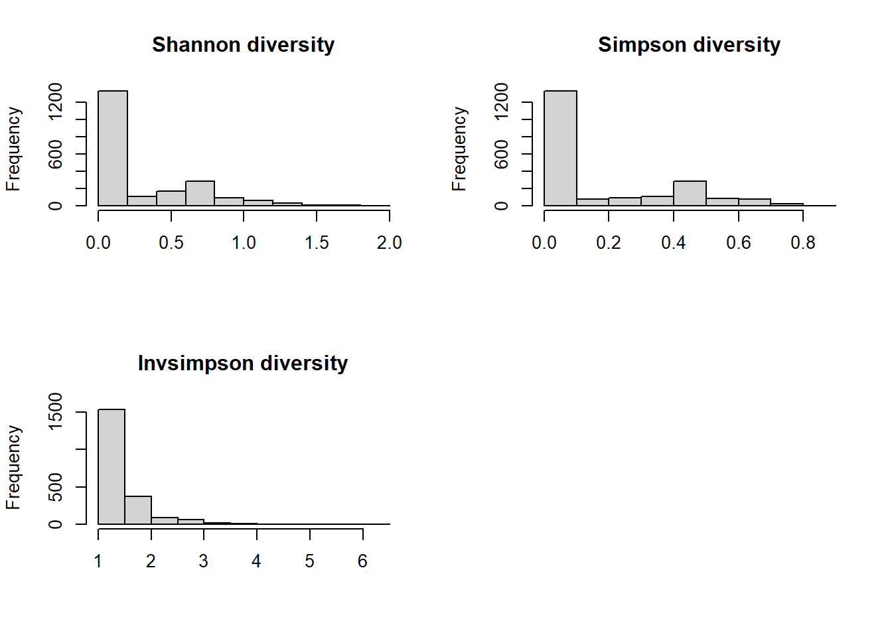

Dietary diversity may have an important role in predicting health outcomes, and nuts/seeds/legumes food groups are likely to have health-promoting effects. To investigate the dietary diversity in specific food groups, we will select food items in a particular group, evaluate their diversity, and group participants based on their consumption patterns of the food group of interest.
Name the path to DietDiveR directory where input files are pulled.
main_wd <- "~/GitHub/DietDiveR"Load necessary packages.
library(vegan)
library(reshape2)
library(data.tree)Load necessary functions.
source("lib/specify_data_dir.R")
source("lib/diversity_nth_tile.R")
# Load source scripts to build foodtrees and IFC tables.
source("lib/specify_data_dir.R")
source("lib/Food_tree_scripts/newick.tree.r")
source("lib/Food_tree_scripts/make.food.tree.r")
source("lib/Food_tree_scripts/make.food.ifc.r")
source("lib/Food_tree_scripts/make.fiber.ifc.r")
source("lib/Food_tree_scripts/make.dhydrt.ifc.r")You can come back to the main directory by:
setwd(main_wd)Specify the directory where the data is.
SpecifyDataDirectory(directory.name = "eg_data/NHANES/")Load averaged totals data, nutrition & food categories with demographic, gender-age, body measurements, and metadata. From NHANES_03_add_meta_GLU_index.R..
totals <- read.delim("Total_D12_FC_QC_mean_QC_demo_ga_body_meta.txt")This should have 4,164 people.
nrow(totals)## [1] 4164Shannon’s diversity is one of the measures to evaluate ecological diversity. We will use it to evaluate diet diversity of each individual in the NHANES data.
vegan::diversity calculates Shannon’s diversity index one by one.
As an input, we need to have a table with SEQN as rows and food items as columns. So, we will create an IFC table first.
Load the food items data where QC-ed individuals were removed based on their totals data.
food <- read.delim("Food_D12_FC_QC_demo_QCed.txt", sep= "\t", header=T)Count the number of unique SEQNs. There should be 4164 people.
length(unique(food$SEQN))## [1] 4164Here, we are interested in food items with their foodcode tarting from 4; nuts/seeds/legumes. Select only the rows that contain those food items.
food4s <- subset(food, Food_code > 39999999 & Food_code < 50000000)Check that the subsetted data only contains 4xxxxxxxs.
summary(food4s$Food_code)## Min. 1st Qu. Median Mean 3rd Qu. Max.
## 41101000 41205070 42101110 41821482 42202000 43108010Check the summary of the subset data.
paste(length(unique(food4s$SEQN)), "people consumed",
nrow(food4s), "food items with duplicates.",
"There are", length(unique(food4s$Food_code)), "unique food items.")## [1] "2090 people consumed 3931 food items with duplicates. There are 243 unique food items."Save as a txt file.
write.table(food4s, "Div/Food_D12_FC_QC_demo_QCed_4s.txt", sep= "\t", row.names=F,quote=F)To calculate diversity of 4xxxxxxxs for each SEQN, we need to create an IFC table.
Specify where the data is.
SpecifyDataDirectory("eg_data/NHANES/Div")MakeFoodTree(nodes_fn="../../Food_tree_eg/NodeLabelsMCT.txt",
addl_foods_fn = NULL,
num_levels = 3,
food_database_fn = "Food_D12_FC_QC_demo_QCed_4s.txt",
output_tree_fn = "Foodtree/Food_D12_FC_QC_demo_QCed_4s_3Lv.nwk",
output_taxonomy_fn = "Foodtree/Food_D12_FC_QC_demo_QCed_4s_3Lv.tax.txt"
)Generate IFC tables for downstream analyses; IT MAY TAKE SOME TIME.
It is OK to see the following warning message: In write.table(fiber.ifc, output_fn, sep = “, quote = F, append = TRUE) : appending column names to file.
MakeFoodIfc(food_records_fn= "Food_D12_FC_QC_demo_QCed_4s.txt",
food_record_id = "SEQN", # The ID of your participants
food_taxonomy_fn= "Foodtree/Food_D12_FC_QC_demo_QCed_4s_3Lv.tax.txt", # Your taxonomy file produced by MakeFoodTree.
output_fn = "Foodtree/Food_D12_FC_QC_demo_QCed_4s_3Lv.food.ifc.txt") # Output ifc file to be saved.## Warning in write.table(food.ifc, output_fn, sep = "\t", quote = F, append =
## TRUE): appending column names to fileLoad the generated IFC table.
ifc <- read.delim("Foodtree/Food_D12_FC_QC_demo_QCed_4s_3Lv.food.ifc.txt")It should have the dimension of number of unique foods x (1 food column + number of people + 1 taxonomy column). 243 x 2092, in this case.
dim(ifc)## [1] 243 2092The column names have “X.” at the beginning. We will take care of it later.
ifc[1:4, 1:4]## X.FOODID X84804 X86670
## 1 Beans dry cooked NS as to type and as to fat added in cooking 67.5 90
## 2 Beans dry cooked NS as to type fat added in cooking 0.0 0
## 3 Beans dry cooked NS as to type fat not added in cooking 0.0 0
## 4 Beans canned drained NS as to type fat added in cooking 0.0 0
## X88668
## 1 7.5
## 2 0.0
## 3 0.0
## 4 0.0Take out the foodID (description) and taxonomy from ifc.
ifc2 <- ifc[, 2: (ncol(ifc)-1) ]transpose so that the SEQN will come to rows.
ifc2t <- as.data.frame(t(ifc2))Add taxonomy as the column names of ifc2t.
colnames(ifc2t) <- ifc$X.FOODIDEach row of ifc2t is SEQN. So, diversity needs to be calculated per each row.
Make a table to save results.
SEQNdiv <- as.data.frame(matrix(nrow = nrow(ifc2t) , ncol = 4))
colnames(SEQNdiv) <- c("SEQN", "Shannon", "Simpson", "Invsimpson")Do a loop to calculate Shannon’s, Simpson, and inverse-Simpson diversity for all SEQNs (in rows). This may take a few minutes.
for( i in 1: nrow(ifc2t) ){
SEQNdiv[i, 1] <- rownames(ifc2t)[i]
SEQNdiv[i, 2] <- diversity(ifc2t[i, ], 'shannon')
SEQNdiv[i, 3] <- diversity(ifc2t[i, ], 'simpson')
SEQNdiv[i, 4] <- diversity(ifc2t[i, ], 'invsimpson')
}
head(SEQNdiv)## SEQN Shannon Simpson Invsimpson
## 1 X84804 0.4885588 0.3097996 1.448854
## 2 X86670 0.9144513 0.5555141 2.249790
## 3 X88668 0.3179368 0.1748179 1.211854
## 4 X90694 0.6534051 0.4607873 1.854556
## 5 X92090 0.5459573 0.3601875 1.562958
## 6 X92397 0.5929170 0.4031662 1.675508There should be no NA values.
table(is.na(SEQNdiv), useNA="always")##
## FALSE <NA>
## 8360 0Plot histograms of each of the diversity measures.
par(mfrow = c(2, 2))
hist(SEQNdiv$Shannon, main="Shannon diversity", xlab="", breaks=10)
hist(SEQNdiv$Simpson, main="Simpson diversity", xlab="", breaks=10)
hist(SEQNdiv$Invsimpson, main="Invsimpson diversity", xlab="", breaks=10)
par(mfrow = c(1, 1))
Some have 0 diversity → If a row has only one non-zero values, then diversity will be zero. e.g. c(20,0,0,0,0,0,0). i.e., those only consumed one nuts/seeds/legumes food have diversity of zero. None of them are normally distributed because of a lot of zero diversity values. For demonstration purposes, we will use Shannon’s diversity.
Our goal is to mark samples as:
| DivGroup | Description | Shannon’s diversity |
|---|---|---|
| DivNA | Did not report any foods with Food ID of 4xxxxxxxx. | NA |
| Div0 | Reported 1 food with Food ID of 4xxxxxxx. | 0 |
| Div1 | Reported >1 foods with Food ID of 4xxxxxxx. lower. | > 0 |
| Div2 | Reported >1 foods with Food ID of 4xxxxxxx. upper. | > 0 |
Remove the “X” in the SEQNdiv$SEQN for merging.
SEQNdiv$SEQN <- gsub(SEQNdiv$SEQN, pattern = "X", replacement = "") First, need to add the diversity values to totals. Only take the rows present in both datasets.
totals_div <- merge(totals, SEQNdiv, by='SEQN')Select individuals whose diversity score is > 0, and group them into groups lower and upper (2-tiles) based on their Shannon’s diversity measure.
DivNthTile(input= totals_div, div.var="Shannon", nth.tile=2)## [1] "39% of the 2090 individuals have > 0 in Shannon"
## 0% 50% 100%
## 0.02738965 0.65897998 1.95075530
## [1] "Div has been grouped into 2 groups based on Shannon. Output is named as 'out'."
## [1] "Table of out$Div:"
##
## 1 2 <NA>
## 403 403 0
## [1] "Summary of each level of the Div groups is as follows:"
## [1] 1
## Min. 1st Qu. Median Mean 3rd Qu. Max.
## 0.02739 0.32426 0.46815 0.44089 0.58795 0.65896
## [1] 2
## Min. 1st Qu. Median Mean 3rd Qu. Max.
## 0.6590 0.6890 0.8022 0.8768 1.0117 1.9508Define Div1 and Div2.
out$DivGroup <-
ifelse(
out$Div == 1,
out$DivGroup <- 'Div1',
out$DivGroup <- 'Div2'
)Select only the SEQN and DivGroup.
SEQN_Div12 <- out[, c("SEQN", "DivGroup")]Define Div0.
# Subset those that have Shannon index = 0.
totals_div_zero <- subset(totals_div, Shannon == 0)Add DivGroup variable, and insert “Div0”.
totals_div_zero$DivGroup <- 'Div0'Select only the SEQN and DivGroup.
SEQN_Div0 <- totals_div_zero[, c("SEQN", "DivGroup")]Define DivNA.
Define “Not in” function. By default it’s not existent.
`%!in%` <- Negate(`%in%`)Subset those that are not in SEQNdiv.
Those are the ones that did not consume nuts/seeds/legumes.
totals_not_in_SEQNdiv <- totals[totals$SEQN %!in% SEQNdiv$SEQN, ] Add DivGroup variable, and insert “DivNA”.
totals_not_in_SEQNdiv$DivGroup <- 'DivNA'Take only the SEQN and DivGroup.
SEQN_DivNA <- totals_not_in_SEQNdiv[, c("SEQN", "DivGroup")]Combine SEQN_DivNA, SEQN_Div0, and SEQN_Div12 for merging.
SEQN_Div_NA_012 <- rbind(SEQN_DivNA, SEQN_Div0, SEQN_Div12)Now, all the SEQNs have DivGroups.
Check that this should have the same number of rows as totals does.
identical(length(unique(SEQN_Div_NA_012$SEQN)), nrow(totals))## [1] TRUEMerge DivGroups with the totals.
totals_divgroup <- merge(totals, SEQN_Div_NA_012, all.x=T, by="SEQN")Change DivGroup into a factor and specify the factor levels.
totals_divgroup$DivGroup <- factor(totals_divgroup$DivGroup,
levels = c('DivNA', 'Div0', 'Div1', 'Div2') )The individuals in totals were grouped into 4 groups depending on their consumption of 4xxxxxxx foods (or the lack thereof). The totals_divgroup has DivGroup column.
table(totals_divgroup$DivGroup, useNA = "ifany")##
## DivNA Div0 Div1 Div2
## 2074 1284 403 403Save the totals with DivGroup.
write.table(totals_divgroup, "Total_D12_FC_QC_mean_QC_demo_ga_body_meta_DivGroup.txt",
sep="\t", row.names=F, quote=F)Health outcomes and demographic data could be explored by DivGroup.
Come back to the main directory.
setwd(main_wd)